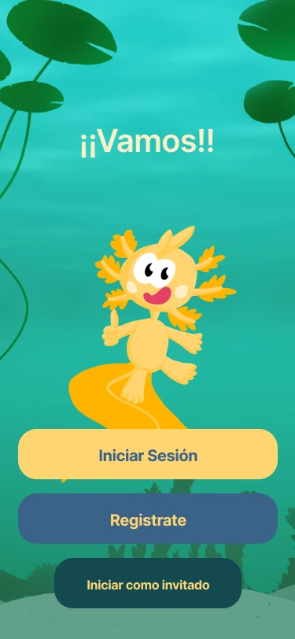

Ongoing · 2026
Yoolmi
UX/UI collaboration on a child-friendly Mexican Sign Language learning app. I am currently rejoining the team and the product is still evolving.
Deep case studies first, then current collaborations and supporting 3D work. This structure is intentionally expandable as new projects become ready.
Projects where I can show the problem, my ownership, decisions, evidence, iteration and outcome.
Projects can live here while they are still developing. If the evidence becomes strong enough, they can graduate into full case studies.

UX/UI collaboration on a child-friendly Mexican Sign Language learning app. I am currently rejoining the team and the product is still evolving.
This slot is intentionally open for stronger future work.
A smaller gallery for modeling and production work that supports my multidisciplinary background.

Game-ready package modeling and UVs, still-life/material studies, and a Wind Waker-inspired watch project.